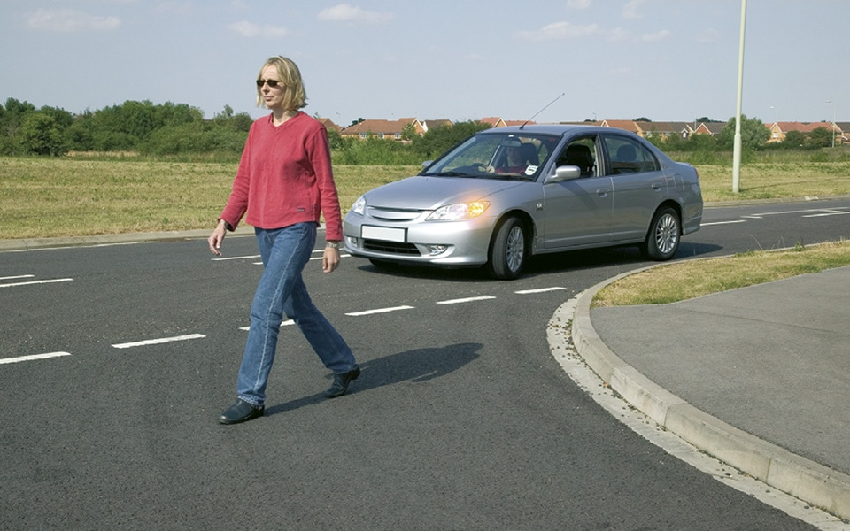
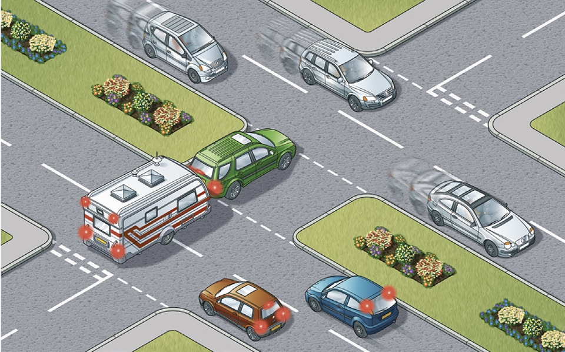
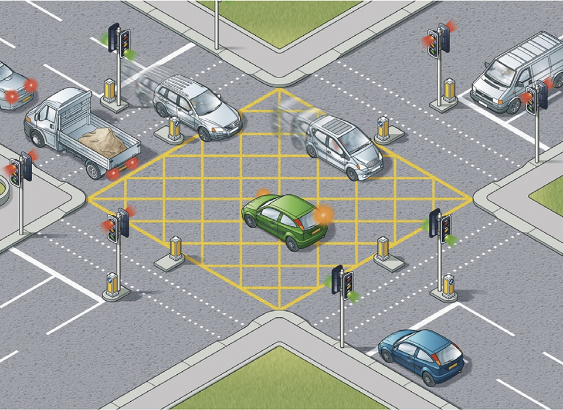
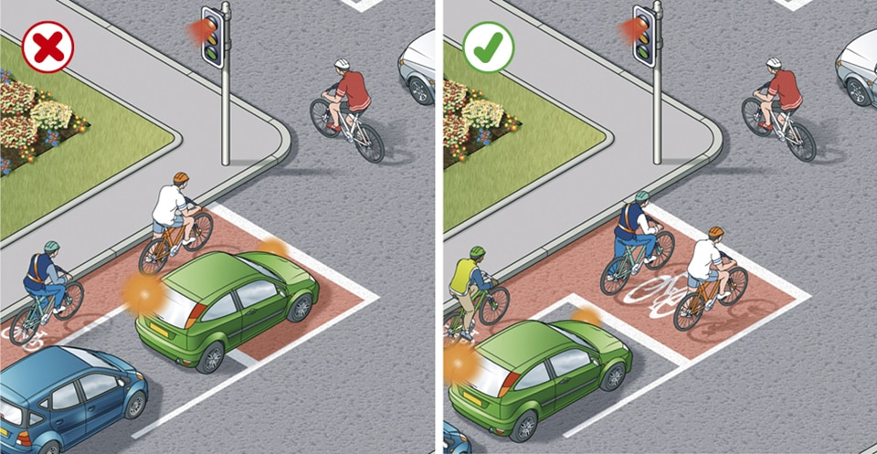
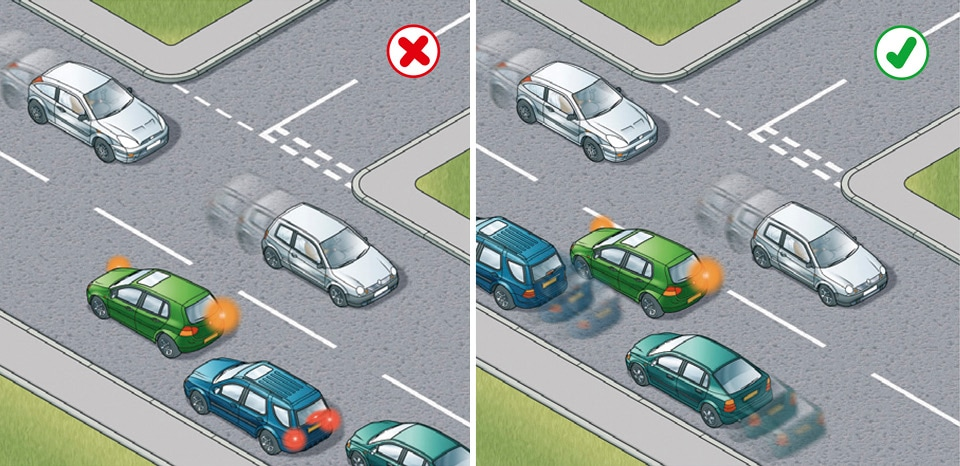
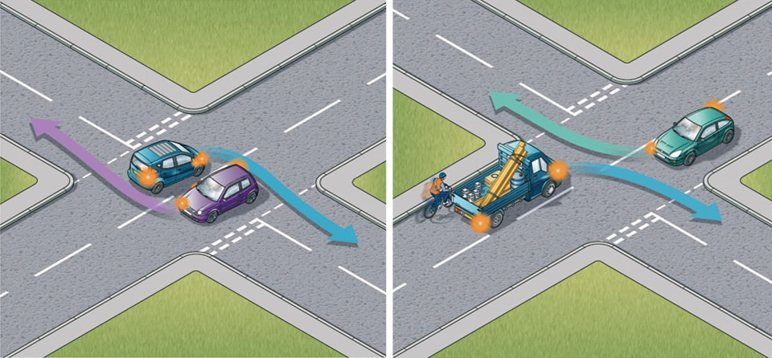
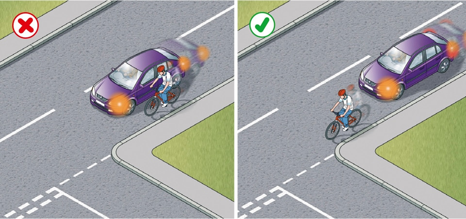

Using the road (159 to 203)
3. Road junctions (170 to 183)
170
Take extra care at junctions. You should
Take extra care at junctions. You should
- watch out for cyclists, motorcyclists and pedestrians including powered wheelchairs/mobility scooter users as they are not always easy to see. Be aware that they may not have seen or heard you if you are approaching from behind
- give way to pedestrians crossing or waiting to cross a road into which or from which you are turning. If they have started to cross they have priority, so give way (see Rule H2)
- remain behind cyclists, horse riders, horse drawn vehicles and motorcyclists at junctions even if they are waiting to turn and are positioned close to the kerb
- watch out for long vehicles which may be turning at a junction ahead; they may have to use the whole width of the road to make the turn (see Rule 221)
- watch out for horse riders who may take a different line on the road from that which you would expect
- not assume, when waiting at a junction, that a vehicle coming from the right and signalling left will actually turn. Wait and make sure
- look all around before emerging. Do not cross or join a road until there is a gap large enough for you to do so safely.

Rule 170: Give way to pedestrians who have started to cross
171
You MUST stop behind the line at a junction with a ‘Stop’ sign and a solid white line across the road. Wait for a safe gap in the traffic before you move off.
Laws RTA 1988 sect 36 & TSRGD regs 10 & 16
172
The approach to a junction may have a ‘Give Way’ sign or a triangle marked on the road. You MUST give way to traffic on the main road when emerging from a junction with broken white lines across the road.
Laws RTA 1988 sect 36 & TSRGD regs 10(1),16(1) & 25
173
Dual carriageways. When crossing or turning right, first assess whether the central reservation is deep enough to protect the full length of your vehicle.
You MUST stop behind the line at a junction with a ‘Stop’ sign and a solid white line across the road. Wait for a safe gap in the traffic before you move off.
Laws RTA 1988 sect 36 & TSRGD regs 10 & 16
172
The approach to a junction may have a ‘Give Way’ sign or a triangle marked on the road. You MUST give way to traffic on the main road when emerging from a junction with broken white lines across the road.
Laws RTA 1988 sect 36 & TSRGD regs 10(1),16(1) & 25
173
Dual carriageways. When crossing or turning right, first assess whether the central reservation is deep enough to protect the full length of your vehicle.
- If it is, then you should treat each half of the carriageway as a separate road. Wait in the central reservation until there is a safe gap in the traffic on the second half of the road.
- If the central reservation is too shallow for the length of your vehicle, wait until you can cross both carriageways in one go.

Rule 173: Assess your vehicle’s length and do not obstruct traffic
174
Box junctions. These have criss-cross yellow lines painted on the road (download ‘Road markings’). You MUST NOT enter the box until your exit road or lane is clear. However, you may enter the box and wait when you want to turn right, and are only stopped from doing so by oncoming traffic, or by other vehicles waiting to turn right. At signalled roundabouts you MUST NOT enter the box unless you can cross over it completely without stopping.
Law TSRGD regs 10(1) & 29(2)
Box junctions. These have criss-cross yellow lines painted on the road (download ‘Road markings’). You MUST NOT enter the box until your exit road or lane is clear. However, you may enter the box and wait when you want to turn right, and are only stopped from doing so by oncoming traffic, or by other vehicles waiting to turn right. At signalled roundabouts you MUST NOT enter the box unless you can cross over it completely without stopping.
Law TSRGD regs 10(1) & 29(2)

Rule 174: Enter a box junction only if your exit road is clear
Junctions controlled by traffic lights
175
You MUST stop behind the white ‘Stop’ line across your side of the road unless the light is green. If the amber light appears you may go on only if you have already crossed the stop line or are so close to it that to stop might cause a collision.
Laws RTA 1988 sect 36 & TSRGD regs 10 & 36
176
You MUST NOT move forward over the white line when the red light is showing. Only go forward when the traffic lights are green if there is room for you to clear the junction safely or you are taking up a position to turn right. If the traffic lights are not working, treat the situation as you would an unmarked junction and proceed with great care.
Laws RTA 1988 sect 36 & TSRGD regs 10 & 36
177
Green filter arrow. This indicates a filter lane only. Do not enter that lane unless you want to go in the direction of the arrow. You may proceed in the direction of the green arrow when it, or the full green light shows. Give other traffic, especially cyclists, time and room to move into the correct lane.
175
You MUST stop behind the white ‘Stop’ line across your side of the road unless the light is green. If the amber light appears you may go on only if you have already crossed the stop line or are so close to it that to stop might cause a collision.
Laws RTA 1988 sect 36 & TSRGD regs 10 & 36
176
You MUST NOT move forward over the white line when the red light is showing. Only go forward when the traffic lights are green if there is room for you to clear the junction safely or you are taking up a position to turn right. If the traffic lights are not working, treat the situation as you would an unmarked junction and proceed with great care.
Laws RTA 1988 sect 36 & TSRGD regs 10 & 36
177
Green filter arrow. This indicates a filter lane only. Do not enter that lane unless you want to go in the direction of the arrow. You may proceed in the direction of the green arrow when it, or the full green light shows. Give other traffic, especially cyclists, time and room to move into the correct lane.

Rule 178: Do not unnecessarily encroach on the cyclists waiting area
178
Advanced stop lines. Some signal-controlled junctions have advanced stop lines to allow cycles to be positioned ahead of other traffic. Motorists, including motorcyclists, MUST stop at the first white line reached if the lights are amber or red and should avoid blocking the way or encroaching on the marked area at other times, e.g. if the junction ahead is blocked. If your vehicle has proceeded over the first white line at the time that the signal goes red, you MUST stop at the second white line, even if your vehicle is in the marked area. Allow cyclists time and space to move off when the green signal shows.
Laws RTA 1988 sect 36 & TSRGD regs 10, 36(1) & 43(2)
Turning right
179
Well before you turn right you should
180
Wait until there is a safe gap between you and any oncoming vehicle. Watch out for cyclists, motorcyclists, pedestrians and other road users. Check your mirrors and blind spot again to make sure you are not being overtaken, then make the turn. Do not cut the corner. Take great care when turning into a main road; you will need to watch for traffic in both directions and wait for a safe gap.
Remember: Mirrors – Signal – Manoeuvre
Advanced stop lines. Some signal-controlled junctions have advanced stop lines to allow cycles to be positioned ahead of other traffic. Motorists, including motorcyclists, MUST stop at the first white line reached if the lights are amber or red and should avoid blocking the way or encroaching on the marked area at other times, e.g. if the junction ahead is blocked. If your vehicle has proceeded over the first white line at the time that the signal goes red, you MUST stop at the second white line, even if your vehicle is in the marked area. Allow cyclists time and space to move off when the green signal shows.
Laws RTA 1988 sect 36 & TSRGD regs 10, 36(1) & 43(2)
Turning right
179
Well before you turn right you should
- use your mirrors to make sure you know the position and movement of traffic behind you
- give a right-turn signal
- take up a position just left of the middle of the road or in the space marked for traffic turning right
- leave room for other vehicles to pass on the left, if possible.
180
Wait until there is a safe gap between you and any oncoming vehicle. Watch out for cyclists, motorcyclists, pedestrians and other road users. Check your mirrors and blind spot again to make sure you are not being overtaken, then make the turn. Do not cut the corner. Take great care when turning into a main road; you will need to watch for traffic in both directions and wait for a safe gap.
Remember: Mirrors – Signal – Manoeuvre

Rule 180: Position your vehicle correctly to avoid obstructing traffic
181
When turning right at crossroads where an oncoming vehicle is also turning right, there is a choice of two methods
When turning right at crossroads where an oncoming vehicle is also turning right, there is a choice of two methods
- turn right side to right side; keep the other vehicle on your right and turn behind it. This is generally the safer method as you have a clear view of any approaching traffic when completing your turn
- left side to left side, turning in front of each other. This can block your view of oncoming vehicles, so take extra care. Cyclists and motorcyclists in particular may be hidden from your view. Road layout, markings or how the other vehicle is positioned can determine which course should be taken.

Rule 181: Left - Turning right side to right side. Right - Turning left side to left side
Turning left
182
Use your mirrors and give a left-turn signal well before you turn left. Do not overtake just before you turn left and watch out for traffic coming up on your left before you make the turn, especially if driving a large vehicle. Cyclists, motorcyclists and other road users in particular may be hidden from your view.
182
Use your mirrors and give a left-turn signal well before you turn left. Do not overtake just before you turn left and watch out for traffic coming up on your left before you make the turn, especially if driving a large vehicle. Cyclists, motorcyclists and other road users in particular may be hidden from your view.

Rule 182: Do not cut in on cyclists
183
When turning
When turning
- keep as close to the left as is safe and practicable
- give way to any vehicles using a bus lane, cycle lane, cycle track or tramway from either direction, including when they are passing slow moving or stationary vehicles on either side.